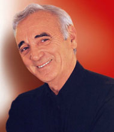

Շառլ Ազնավուր
 Շառլ Ազնավուրը (Վաղինակ Ազնաուրյան) համաշխարհային էստրադայի դասական երգիչ է, հայտնի հասարակական գործիչ` ծնվել է 1924թ. Փարիզում: Նրա իսկական ազգանունը Ազնաուրյան է:
Նրա ծնողները էմիգրանտներ էին, որոնք տեղափոխվեցին Ֆրանսիա 1915թ. հայոց ցեղասպանության ժամանակ: Նրանք մտադիր էին մեկնել ԱՄՆ, սակայն վիզա չստանալով ստիպված եղան մնալ Ֆրանսիայում: Այդպես Շառլ Ազնավուրը դարձավ Ֆրանսիայի քաղաքացի:
Ազնավուրի առաջին արտիստական հաջողությունները նրա մանկական դերերն էին երգի թատրոնում, որոնք գրվել էին իր կողմից 20 տարեկան հասակում Էդիթ Պիաֆի և Մորիս Շեվալյեի համար: Ասում են, որ Ազնավուրը որոշեց դառնալ շանսոնյե այն բանից հետո, երբ նա 9-ը տարեկան հասակում լսեց Շեվալյեի երգերից մեկը:
Նա հայտնվեց երաժշտական Պառնասում 40-ական թվականներին, շատ տաղանդավոր և երիտասարդ կոմպոզիտոր Պիեր Ռոշեի հետ դուետում: Նրանց նկատեց ֆրանսուհի մեծ դիվան` Էդիթ Պիաֆը, ով խնդրեց Ազնավուրին նրա համար երգեր գրել: Շառլը և Պիերը երգչուհու հետ միասին մեկնեցին համերգային շրջագայության Ֆրանսիայով և Ամերիկայով: Պիաֆի հետ ծանոթությունը, Ազնավուրի պրոֆեսիոնալ կյանքի գլխավոր դրդապատճառն էր: Նա մեծ երգչուհուց սովորեց այն ամենը ինչ հնարավոր է սովորել շանսոնի մասին: Պիաֆի պնդմամբ` Ազնավուրը թողեց Ռոշեին և երգեր գրելու հետ մեկտեղ սկսեց երգչի իր անհատական ֆանտաստիկ կարիերան:
Հայկական թեման նրա մոտ ներկայացված է մի քանի երգերում. “Ջան”, “Ինքնակենսագրություն”, “Նրանք ընկան”, “Քո համար, Հայաստան”: 1955-ից Շառլ Ազնավուրը խաղացել է նաև կինոյում, նկարահանվել է ֆրանսիական և ամերիկյան ֆիլմերում, որոնցից են. “Տաքսին Թոբրուքից”, “Իշխանության ժամանակաշրջան”, “Էդիթ և Մարսել” և այլն:
Նա հրապարակել է նաև իր բանաստեղծությունները և ինքնակենսագրությունը` “Ազնավուրը Ազնավուրի մասին”: Վաճառելով ավելի քան 100 միլիոն ձայնագրություն, Ազնավուրը դարձավ թագավոր երգիչների շարքում, որը երգում է սիրո մասին ֆրանսերեն լեզվով, ինչպես Էլվիս Փրեսլին անգլերեն և Հուլիո Իգլեսիասը իսպաներեն:
Աշխատելով թարգմանիչների հետ, նա ձայնագրել է իր ստեղծագործությունները անգլերեն, իսպաներեն և իտալերեն տարբերակներով: 1964-ին նա կազմակերպեց իր առաջին վաճառքը Քարնեգի Հոլլում և իր առաջին մեծ համերգային շրջագայությունը հանդես գալով Թուրքիայում, Լիբանանում, Հունաստանում, Աֆրիկայում և ԽՍՀՄ-ում:
Նրա երգերը (որոնք հազարից ավել են) կատարել են այնպիսի երգիչներ ինչպիսին են Ռեյ Չարլզը, Լայզա Մինելլին, Բոբ Դիլանը: Վերջերս “Թայմ” ամսագրի հարցմամբ Ազնավուրը ճանաչվեց XX դարի լավագույն էստրադային կատարող: Լինելով լեգենդ` Շառլ Ազնավուրը իսկական հայրենասեր է: 1988թ. տեղի ունեցած Սպիտակի երկրաշարժից հետո, որը հազարավոր կյանքեր խլեց, նա հիմնել է բարեգործական ֆոնդ “Ազնավուրը Հայաստանի համար” և մի քանի ակցիա է կազմակերպել աղետից տուժողներին օգնելու համար: Նա պատրաստել է բարեգործական տեսահոլովակ Անրի Վերնոյի և 90 այլ ֆրանսիացի երգիչ-դերասանների հետ միասին “Քեզ համար, Հայաստան” երգի համար: Տեսահոլովակը վաճառվեց ռեկորդային` 2 միլլիոն օրինակով:
Ավելի ուշ Հայաստանին ցուցաբերած օգնության համար նրան շնորհել են դիվանագիտական անձնագիր և նշանակել են Հայաստանի Հանրապետության մշտական դեսպան ՅՈՒՆԵՍԿՈՅՈՒՄ:
Շառլ Ազնավուրը իր կյանքի մեծ մասը ապրել է Ֆրանսիայում, բայց նա երբեք չի մոռացել, որ նա հայ է: Երգիչը մինչ օրս օգնում է Հայաստանին: